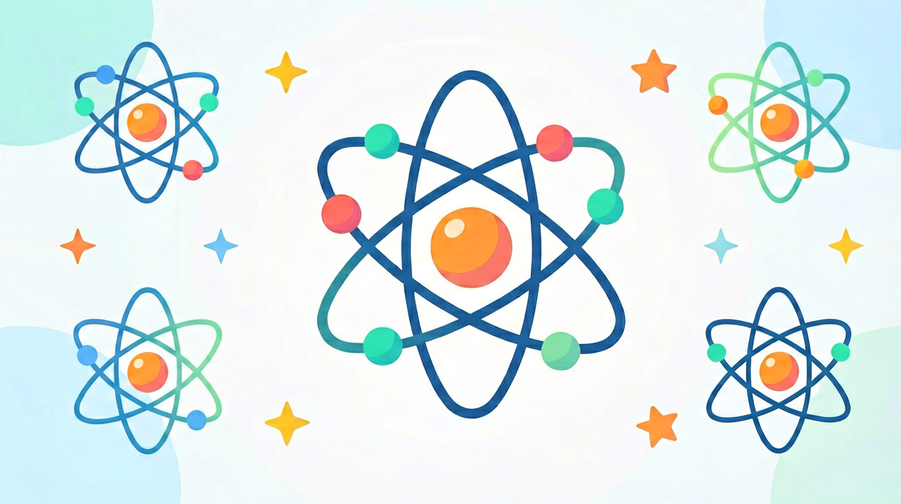

第一层，最多二；
第二层，最多八；
最外层，不超八；
先填满，内后外。

引入为什么要了解原子内部？
AND · 已知
你已经知道物质是由原子构成的，原子是化学变化中最小的粒子。
BUT · 问题
但原子内部到底长什么样？为什么氧原子和氢原子的化学性质完全不同？原子还能再分吗？
THEREFORE · 新知
因此需要深入原子内部：了解原子核（质子+中子）和核外电子的排布规律，才能理解元素化学性质的本质。
前测先测一测
📌 核心问题
原子是由哪些更小的粒子构成的？什么决定了一个原子是氢、碳还是氧？
第 1 题 L1·记忆
原子是由什么构成的？
✅ 正确！原子由居中的原子核（含质子和中子）和绕核运动的核外电子组成。D是道尔顿的旧模型，现在已被否定。
第 2 题 L2·理解
决定元素种类（即区分氢、碳、氧等不同元素）的是？
✅ 正确！质子数（核电荷数）是元素的"身份证"。同一元素的原子质子数必然相同。中子数不同则形成同位素（A错），电子数可变形成离子（C错）。
第 3 题 L1·记忆
在原子中，以下哪个等量关系是正确的？
✅ 正确！原子整体不带电，所以质子数（正电）= 核外电子数（负电）。质子数和中子数不一定相等（如碳-12中各为6，但氢-1中子数为0），质量数 = 质子数+中子数（D错）。
历史原子模型的演变
科学认识是不断深化的过程——每一代科学家都在前人基础上提出更精确的模型。
⚫
道尔顿
1803年
实心球模型
原子是坚硬不可分割的实心小球，不同元素的原子大小和质量不同。✗ 后被否定：原子可以再分
🍮
汤姆生
1897年
葡萄干蛋糕模型（枣糕模型）
发现电子后，认为原子是带正电的"蛋糕"，电子嵌在其中。✗ 后被否定：α粒子散射实验推翻
☀️
卢瑟福
1911年
行星轨道模型（核式结构模型）
通过α粒子散射实验发现原子核：原子中心有带正电的很小很重的核，电子绕核运动。这是目前初中阶段使用的模型。
🔵
玻尔
1913年
能级轨道模型
电子在特定能量轨道（能层）上运动，不同轨道有不同能量。这是初中电子层排布的理论基础。
🔬 卢瑟福α粒子散射实验——三个现象与三个推断
实验现象
① 大多数α粒子直穿金箔
② 少数α粒子发生偏转
③ 极少数α粒子被弹回
科学推断
① 原子内部大部分是空的
② 原子中有带正电的核
③ 原子核体积很小但质量大
⚛ 原子核质子与中子
🔴
质子（Proton）
• 带正电，每个质子带 +1 电荷
• 质子数 = 核电荷数 = 原子序数
• 决定元素的种类
• 质量约为电子的 1836 倍
⚫
中子（Neutron）
• 不带电（中性粒子）
• 质量与质子相近
• 质子数 + 中子数 = 质量数
• 同一元素可有不同中子数（→同位素）
⚡
核电荷数
• 原子核所带的正电荷数
• = 质子数
• 原子整体不显电性，故
• 质子数 = 核外电子数
🔢 核心等量关系（必记）
质子数
=
核电荷数 = 原子序数
=
核外电子数（中性原子）
质量数
=
质子数 + 中子数
（电子质量极小可忽略）
📊 常见原子的组成
| 元素 | 元素符号 | 质子数 | 中子数 | 电子数 | 质量数 |
|---|---|---|---|---|---|
| 氢 | H | 1 | 0 | 1 | 1 |
| 碳 | C | 6 | 6 | 6 | 12 |
| 氮 | N | 7 | 7 | 7 | 14 |
| 氧 | O | 8 | 8 | 8 | 16 |
| 钠 | Na | 11 | 12 | 11 | 23 |
| 铁 | Fe | 26 | 30 | 26 | 56 |
🎯 检测 L3·应用
某原子的核电荷数为 8，质量数为 18，则该原子的中子数为？
中子数 = 质量数 - 质子数 = 18 - =
☁ 核外电子电子层排布规律
电子不是随机分布在原子核周围，而是按能量高低分层排布。能量低的电子在内层，能量高的在外层。这些层叫做电子层（能层），由内到外依次为第一、二、三…层。
1️⃣
排布规则
• 第一层最多容纳 2 个电子
• 第二层最多容纳 8 个电子
• 第三层最多容纳 18 个电子
• 最外层最多 8 个电子
• 先填满内层再填外层
🔑
最外层与化学性质
• 最外层电子数决定化学性质
• 最外层 = 8（第一层=2）：稳定，不易反应（稀有气体）
• 最外层 1~3：易失去电子→金属
• 最外层 5~7：易得到电子→非金属
💡 排布口诀
🎯 检测 L3·应用
硫原子（S）的质子数为 16，其核外电子排布是？
✅ 正确！硫有16个电子：第一层填2个（满），第二层填8个（满），剩余16-2-8=6个填第三层。所以是2-8-6。最外层6个，易得2个电子→非金属（硫）。C/D违反了分层规则。
互动原子结构模拟器
点击按钮切换不同元素，观察质子数、电子层数和最外层电子数的变化规律。
🔬 同位素质子同，中子异
同位素：质子数相同、中子数不同的同种元素的不同原子互称同位素。
同位素的质子数相同 → 是同一种元素；中子数不同 → 质量数不同；化学性质几乎相同（因最外层电子数相同）。
点击卡片查看氢的三种同位素：
¹H
氕（pī）
质子数：1
中子数：0
质量数：1
自然界含量：99.98%
中子数：0
质量数：1
自然界含量：99.98%
²H
氘（dāo）
质子数：1
中子数：1
质量数：2
重水的氢，核聚变燃料
中子数：1
质量数：2
重水的氢，核聚变燃料
³H
氚（chuān）
质子数：1
中子数：2
质量数：3
放射性，半衰期约12年
中子数：2
质量数：3
放射性，半衰期约12年
¹H（氕）：最普通的氢原子，无中子，是自然界丰度最高的同位素（99.98%）。水（H₂O）中的氢就是氕。三种同位素的化学性质几乎完全相同，因为它们的最外层电子数都是1。
🎯 检测 L4·分析
关于同位素，以下说法正确的是？
✅ 正确！同位素的核心是"质子数相同（同种元素）+中子数不同"。化学性质由最外层电子数决定，同位素的电子数相同，所以化学性质几乎相同（B错）。自然界中大多数元素都有多种同位素（D错）。
深层理解🔍 多角度看原子结构
👁️
看见它
原子极其微小——氢原子直径约 0.1 纳米（1×10⁻¹⁰ 米）。而原子核比原子更小约十万倍。如果原子有足球场那么大，原子核只有球场中央的一粒沙子。
🔩
拆开它
原子 = 原子核 + 核外电子
原子核 = 质子 + 中子
质子/中子还可以再分（夸克），但那是高中及以上内容。初中阶段以原子核为最小单位。
🔗
联系它
最外层电子数 → 化学性质 → 元素周期律
质子数 → 元素种类 → 元素符号
这就是为什么元素周期表中原子序数就是质子数！
🚀
迁移它
核聚变（氘+氚→氦+中子）、核裂变（铀-235）、放射性同位素治癌——这些技术的本质都是利用了原子核的结构变化。
后测综合检测
第 1 题 L1·记忆
下列关于质子的描述，正确的是？
✅ 正确！质子带正电（A错），存在于原子核内（B错），质子数=元素种类（核心）。质子数和中子数不一定相等——如氢-1有1质子0中子（D错）。
第 2 题 L3·应用
某原子有 11 个质子、12 个中子，该原子的核外电子数和质量数分别是？
✅ 正确！中性原子：核外电子数 = 质子数 = 11；质量数 = 质子数+中子数 = 11+12 = 23。这就是钠-23（²³Na）。注意电子数等于质子数而非中子数（A错）。
第 3 题 L4·分析
氯原子（Cl）质子数为17，其核外电子排布为2-8-7。根据最外层电子数，氯的化学性质是？
✅ 正确！最外层7个电子，距离"满8个稳定"只差1个，所以氯易得1个电子达到8电子稳定结构，表现非金属性。最外层1-3个才易失去（B错），7个是偏多，D的说法错误。
第 4 题 L2·理解
¹²C 和 ¹⁴C（碳-12和碳-14）是碳的同位素，下列说法正确的是？
✅ 正确！碳-12：6质子+6中子；碳-14：6质子+8中子。都是碳元素（A错），中子数不同（B错），化学性质几乎相同因为最外层电子数相同（D错）。碳-14是放射性同位素，用于考古年代测定。